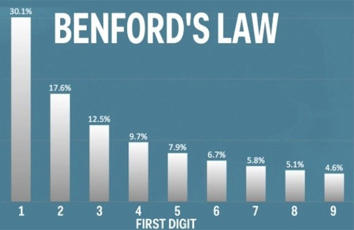

যেতে চাইলে যেতে দেব না, না না, যেতে দেব না
অ্যালার্মের শব্দে ঘুম ভাঙতেই ধড়ফড়িয়ে উঠে পড়লেন বিছানা ছেড়ে। দেখলেন ঘরের জানলা দরজা সব বন্ধ। অবাক হয়ে তাকিয়ে রইলেন বেশ কিছুক্ষণ। হঠাৎই মনে হল যেন একটা বদ্ধ ঘরে আটকা পড়ে গেছেন। কিছুটা মরিয়া হয়ে শরীরের সমস্ত শক্তি প্রয়োগ করে দরজায় জোরে জোরে ধাক্কা দিয়ে খোলার চেষ্টা করতে লাগলেন; কিন্তু কিছুতেই কোনো সুরাহা হল না।
আবার কখনো বা এমনটা হল— একটা বহুতল বাড়ির একতলা থেকে লিফ্টে উঠলেন; গন্তব্য দশ তলা। কিন্তু লিফ্ট থেকে নেমে দেখলেন আবার একতলাতেই ফিরে এসেছেন। শুধু দশতলা বলেই নয়, তিন চার কিংবা পাঁচ তলাতেও যাওয়ার চেষ্টা করে ব্যর্থ হলেন। ফিরে আসছেন একতলাতেই।
কি ভাবছেন? হয়ত কোনো ভুতুড়ে গল্পের আসর নিয়ে বসেছি, কিন্তু না। এমনটা সত্যি হতেই পারে যদি কিনা আপনার এক বিশেষ গাণিতিক যন্ত্রের কথা জানা থাকে।
যেকোনো ধনাত্মক পূর্ণ সংখ্যা (Positive Integer) নিয়ে শুরু করা যাক। ধরা যাক, সংখ্যাটি 7, তো এবার আমরা দুটো নিয়ম প্রয়োগ করব। যদি এটি যুগ্ম বা জোড় সংখ্যা হয় তাহলে 2 দিয়ে ভাগ করব এবং যদি এটি অযুগ্ম বা বিজোড় হয় তবে এর সাথে 3 গুণ করে 1 যোগ করব। এক্ষেত্রে যেহেতু 7 বিজোড়, সেহেতু দ্বিতীয় নিয়ম প্রয়োগ করে পাব \((7 \times 3)+1=22,\) এবার 22 হল জোড়, তাই প্রথম নিয়মে হবে \(22 \div 2 = 11\), এইভাবে আমরা দুটো নিয়ম পরপর প্রয়োগ করেই যেতে থাকব নিম্নলিখিত ভাবে,
\((11 \times 3)+1=34, \; 34 \div 2=17, \; (17 \times 3)+1=52, \; 52 \div 2 = 26, \; 26 \div 2 = 13,\)
\((13 \times 3)+1 = 40, \; 40 \div 2=20, \; 20 \div2 = 10, \; 10 \div 2 = 5, \; (5 \times 3)+1=16,\)
\(16 \div 2 = 8, \; 8 \div 2=4, \; 4 \div 2 = 2, \; 2\div 2 =1\)
এবার যখনই 1 পাব, আবার দ্বিতীয় নিয়মানুসারে পাব \((1 \times 3) +1 = 4\), সেখান থেকে 2, সেখান থেকে আবার 1, অর্থাৎ, এভাবে পুনরাবৃত্তি হতে থাকবে। আর মজার ব্যাপারটা হচ্ছে, আপনার পছন্দ মত যেকোনো ধনাত্মক পূর্ণ সংখ্যা দিয়েই শুরু করতে পারেন এবং ঘটনাক্রমে পৌঁছোবেন “4-2-1” এর চক্রব্যূহে। 1930 সালে জার্মান গণিতজ্ঞ Luther Collatz-এর নামানুসারে এটার নাম হয় Collatz Conjecture. সময় বিশেষে এটি বিভিন্ন নামে অভিহিত হয়েছে, যথা Ulam conjecture (Stanislaw Ulam), Kakutani’s problem (Shizuo Kakutani), Thwaite’s conjecture (Sir Bryan Thwaites), Hasse’s algorithm (Helmut Hasse), Syracuse problem এবং “\(3n+1\) problem”.
উপরোক্ত নিয়মানুসারে যে সংখ্যামালার সৃষ্টি হয় তাকে Hailstone Numbers বলা হয়। এবার এই সংখ্যাগুলিকে কোন বস্তুর ভূমিপৃষ্ঠ থেকে উচ্চতার সঙ্গে তুলনা করুন। যদি সেই উচ্চতাটি 26 মিটার হয় তাহলে এই “3n+1” conjecture অনুযায়ী এটি সর্বোচ্চ 40 মিটার অবধি উঠতে পারে এবং সর্বাধিক 10 টি ধাপ নেবে 1-এ পৌঁছতে। এই “10” কে গাণিতিক ভাষায় “Total Stopping Time” বলা হয়ে থাকে। কিন্তু এবার যদি ঠিক এর পরের সংখ্যাটি অর্থাৎ 27 নেন, তাহলে সর্বোচ্চ \(8849\) মিটার অবধি যেতে পারবেন এবং পরক্ষণেই 1-এ নেমে আসবেন।
ঠিক যেন মাউন্ট এভারেস্টকে এক লহমায় একটা এক মিটার দৈর্ঘ্য বিশিষ্ট লাঠিতে পরিণত করা।
এবার প্রশ্ন হচ্ছে ঠিক কত বড় সংখ্যার কথা আপনি কল্পনা করতে পারেন যাকে কিনা এই দুর্বিসহ নিয়মের বেড়াজালে বেঁধে রাখতে পারবেন?! বেশ, বর্তমান কম্পিউটার প্রযুক্তি ব্যবহার করে এখনও পর্যন্ত যা দাঁড়িয়েছে তা হল
\[ 2^{68} = 295,147,905,179,352,825,856 \]
অনুরুপ ভাবে, প্রথম এক বিলিয়ন সংখ্যামালার প্রতিটিকে প্রাথমিক মান বা সংখ্যা (seed) হিসাবে ধরে যে Halistone Sequence এর সৃষ্টি হয় তার প্রথম অঙ্ক বা Leading Digit দের নিয়ে একটি Histogram বা বারলেখ অঙ্কন করলে সেটার একটা নির্দিষ্ট প্যাটার্ন বা ধরণ লক্ষ্য করা যায় যেটা কিনা শুধুমাত্র “3n+1 problem” এর জন্যই নয়, এই জগৎ সংসারে বিভিন্ন ক্ষেত্রেই সদৃশ লেখচিত্র বর্তমান। বিভিন্ন দেশের জনসংখ্যা থেকে শুরু করে ভৌত ধ্রুবকের (Physical Constant) মান ও ফিবোনাচ্চি রাশিমালা, সমস্ত জায়গায় এই অদ্ভুত প্যাটার্ন দেখতে পাওয়া যায়। এই বিশেষ বিন্যাস বা distribution, Benford’s Law নামে পরিচিত। এমনকি এটি জালিয়াতি শনাক্ত করতেও ব্যবহৃত হয়। Income Tax বা আয়কর সংক্রান্ত সমস্ত সংখ্যা যদি Benford’s Law মেনে চলে, তবে আপনি সৎ, নয়ত আপনি কিছু লুকোচ্ছেন।

বিস্ময় আর খোঁজ মানুষের এই দুটো গুণই ক্রমবিকাশ ঘটিয়েছে মানব সভ্যতার। এই বিস্ময়কর ব্রহ্মাণ্ডের অনেক রহস্য উদ্ঘাটনে মানুষ যেমন সফল হয়েছে তেমনই কিছু রহস্য আজও অমীমাংসিত রয়ে গেছে। সেরকমই এই Collatz Conjecture-এর ভুলভুলাইয়াতে আপনি একবার প্রবেশ করলে “4-2-1” এর মায়াজালে বন্দী হয়েই রয়ে যাবেন।
এখানে একটি সুন্দর R Shiny এনিমেটেড ভিজ্যুয়ালাইজেশন প্রস্তুত করা হয়েছে। (A beautiful R Shiny animated Visualization is presented here).
তথ্য সূত্র:
Collatz Conjecture - Wikipedia
The Simple Math Problem We Still Can’t Solve | Quanta Magazine